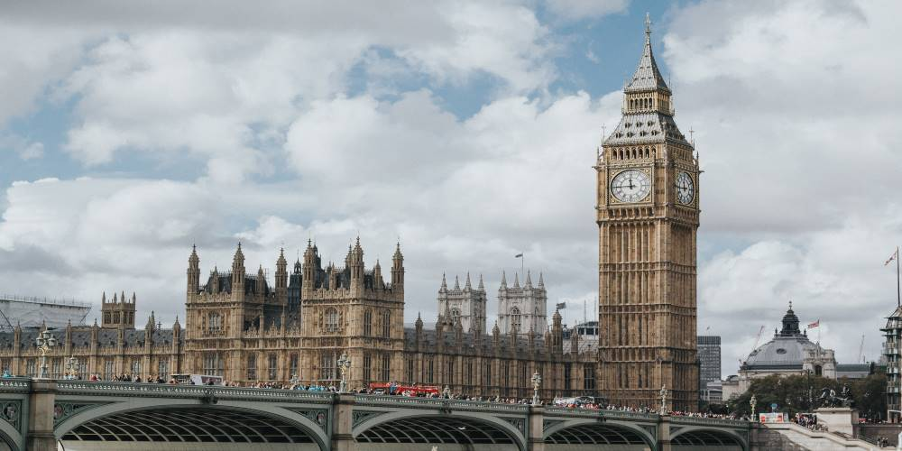
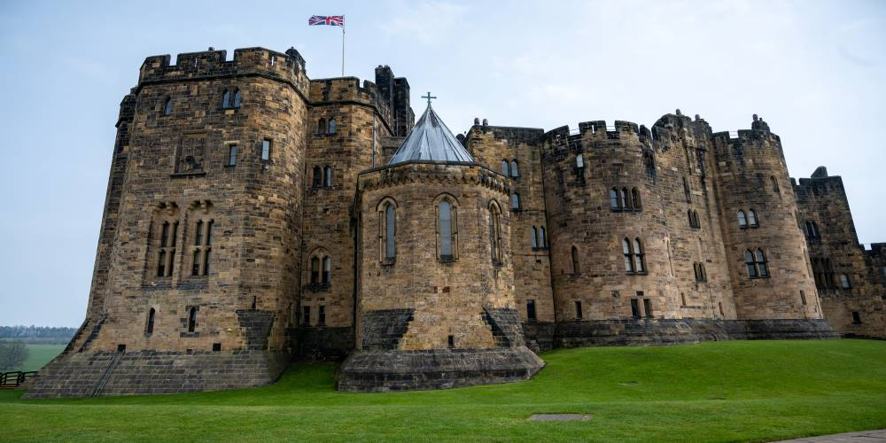
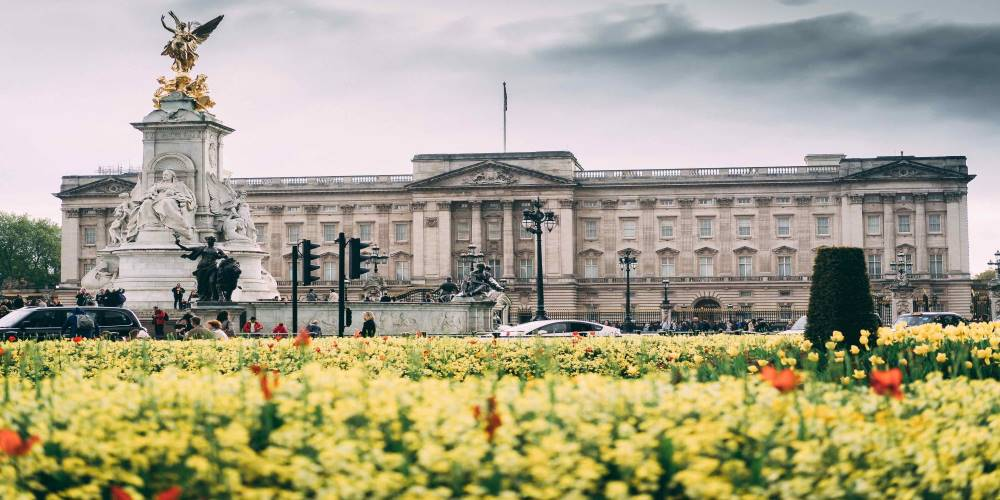
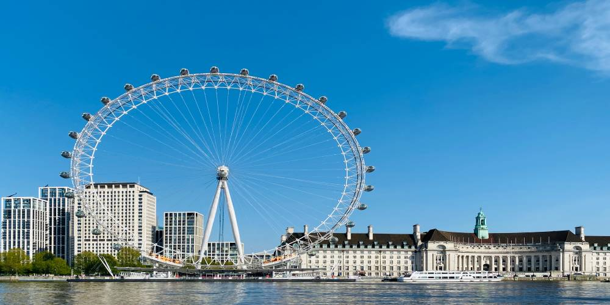
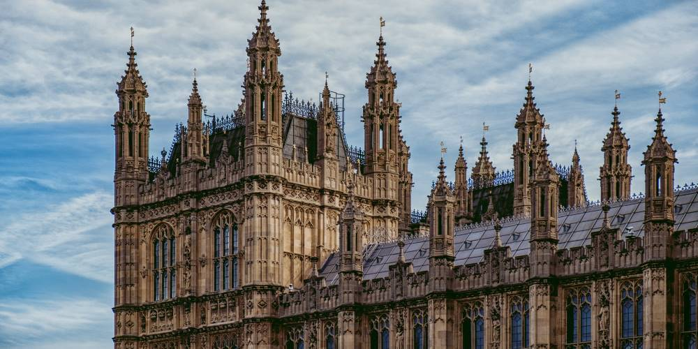

📍Fun Fact - Our Maroon team's official sponsor "Code First Girls" is headquartered in the UK 🎉
1 / 5

Big Ben, the largest four facing clock tower in the world, has helped keep London on time for 157 years.
2 / 5

Alnwick castle has been used as a filming location for many movies and TV shows including Harry Potter.
3 / 5

Buckingham Palace has been the residence of monarchs for centuries, with more than 700 rooms to cater the Royal Family.
4 / 5

The most paid-tourist attraction, the London Eye, has a capacity to accomodate 800 people per rotation.
5 / 5

Founded in 1753, The British Museum is the world's oldest national public museum.
❮
❯